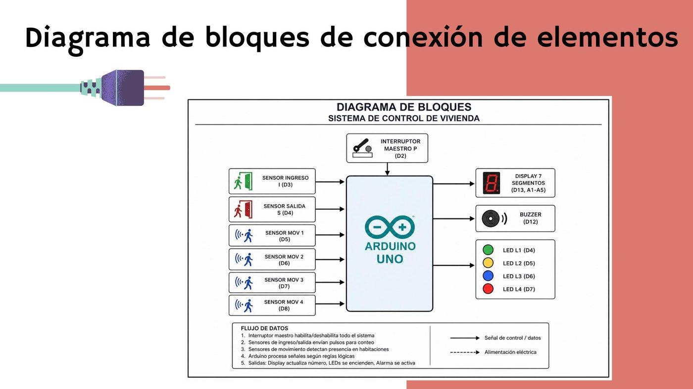
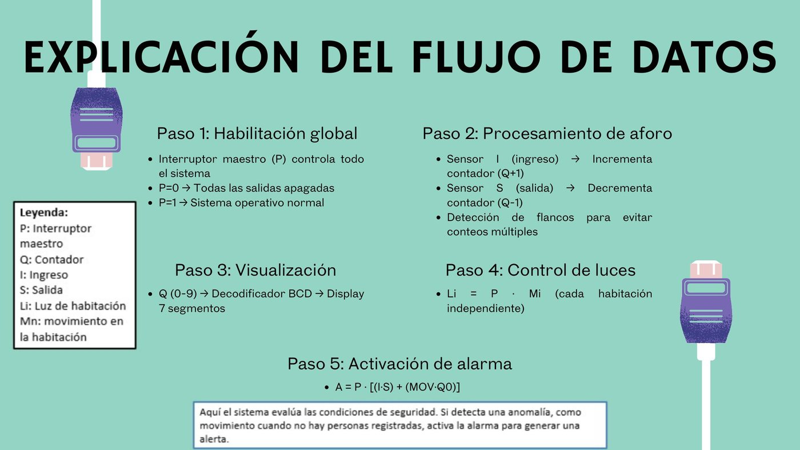
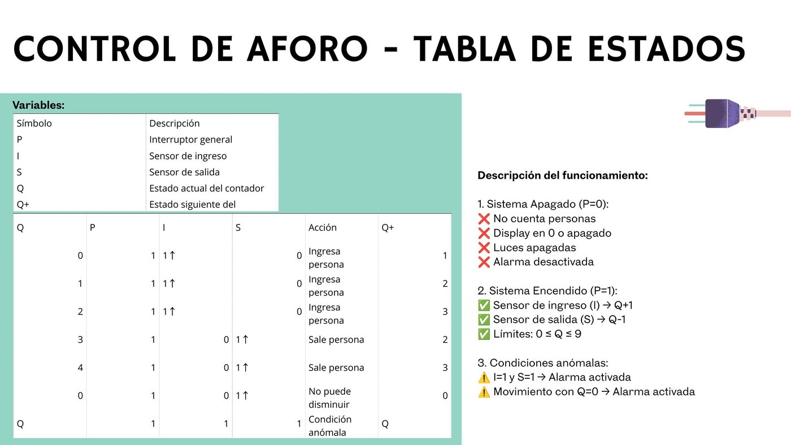
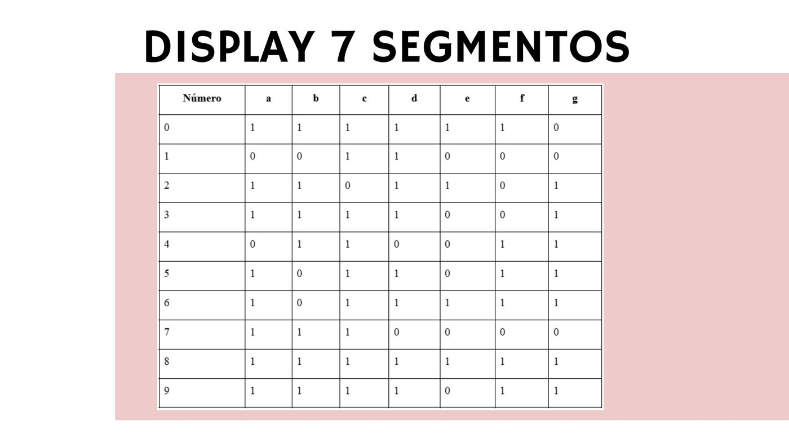
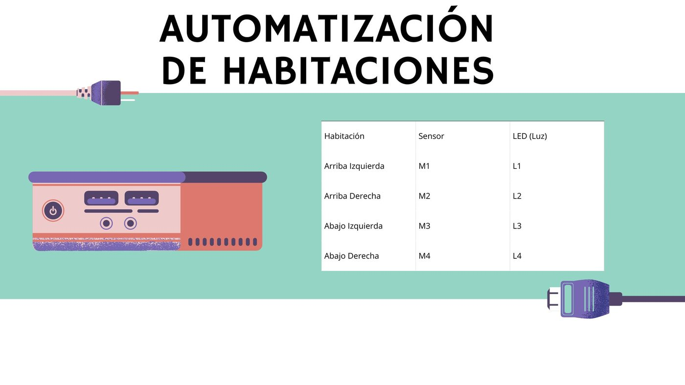

Problema
Contexto del proyecto
El reto consistía en construir una maqueta funcional de casa inteligente usando recursos limitados de Arduino UNO, integrando detección por ambientes, control de aforo, alarma y visualización del número de personas.
Caso de estudio
Sistema de vivienda inteligente en maqueta, desarrollado con Arduino UNO. Integra sensores infrarrojos FC-51, conteo de aforo, luces automáticas, alarma y display de 7 segmentos.
Problema
El reto consistía en construir una maqueta funcional de casa inteligente usando recursos limitados de Arduino UNO, integrando detección por ambientes, control de aforo, alarma y visualización del número de personas.
Solución
Diseñé una lógica de control basada en entradas digitales: sensores FC-51 para las habitaciones, sensores IR de ingreso/salida, buzzer de alarma, LEDs por habitación y display de 7 segmentos para mostrar el aforo.
Mi participación
Armé la distribución de pines, conexiones, pruebas de sensores, lógica en Arduino y documentación del funcionamiento. La solución prioriza claridad del circuito, modularidad del código y demostración física en maqueta.
Funciones
Arquitectura
Lógica
El sistema lee los sensores FC-51 de cada habitación, actualiza el aforo con los sensores IR de entrada/salida, enciende las luces según presencia y muestra el número de personas en el display. Si detecta movimiento con aforo en cero, activa la alarma con buzzer.
Evidencia técnica
Implementación real
La versión final usa sensores FC-51 para las habitaciones, sensores IR para entrada/salida, antirrebote y una alarma que solo se activa cuando hay movimiento con aforo en cero.
bool movimientoAI = !digitalRead(sensorAI);
bool movimientoAD = !digitalRead(sensorAD);
bool movimientoAbI = !digitalRead(sensorAbI);
bool movimientoAbD = !digitalRead(sensorAbD);
if (entrada && !entradaAnterior && millis() - tiempoEntrada > DEBOUNCE_DELAY) {
personas++;
if (personas > 9) personas = 9;
mostrarNumero(personas);
}
if (personas == 0 && hayMovimiento) {
sonidoAlarma();
}Evidencia visual
Evidencia visual del prototipo físico y de la documentación técnica. La maqueta demuestra el flujo completo: sensores FC-51, luces, aforo, alarma y salida visual en display.






Tecnologías
Siguiente versión
Contacto
Puedo explicar la arquitectura, flujo de trabajo o decisiones técnicas detrás de este proyecto.